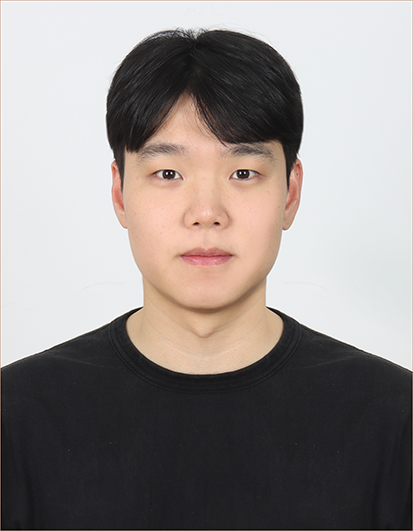

화학분자공학을 전공하고 제약 연구·품질관리 분야에서 사회생활을 시작했지만, 개발로 진로를 전환해 지금은 6년째 서버 개발자로 일하고 있습니다.
라츠온에서 은행·카드사·공공기관을 위한 카드 인증, 발급, 암호화 키 관리 시스템을 주로 개발해왔습니다.
카드사·증권사의 IC카드 인증부터 암호화 전용 보안 장비 연동, 간편결제 연동까지, 보안이 중요한 시스템을 다수 다뤄봤습니다.
다양한 프로젝트를 경험하며 백엔드 중심의 웹 애플리케이션 개발에 전문성을 쌓아왔습니다.
사용자 중심의 서비스 개발과 안정적인 시스템 운영에 가치를 두고 있으며, 그저 작동하는 코드에 만족하지 않고, 효율적인 서비스 설계와 성능 최적화를 위해 프로젝트 이후에도 지속적인 리팩토링으로 코드를 개선합니다.
개선된 코드로 유지보수시 누구나 읽기 쉽고, 수정하기 쉽게 만드는 일에 보람을 느끼며 서비스 개발을 하고 있습니다.
기술을 선택하면 아래 프로젝트/개인 프로젝트 목록이 함께 필터링됩니다.
회사 업무와 별개로 혼자 만든 사이드 프로젝트입니다.